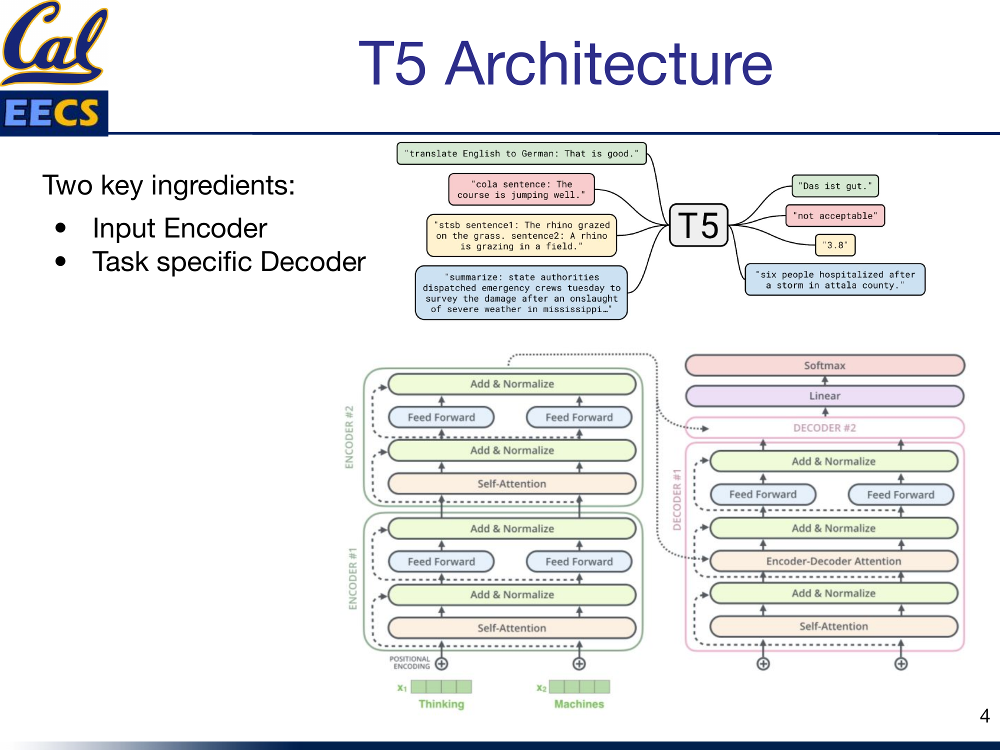
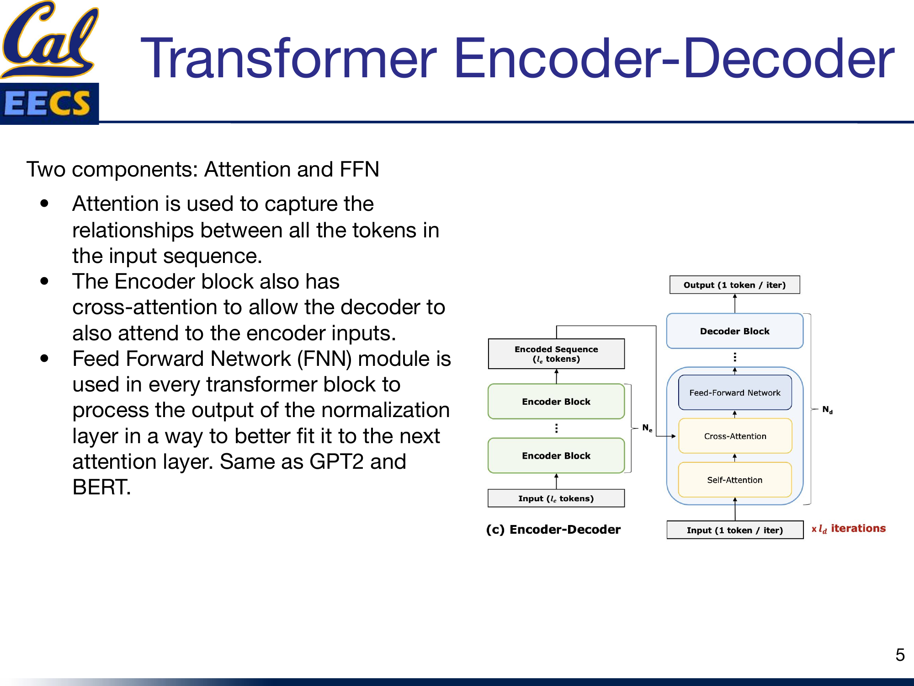
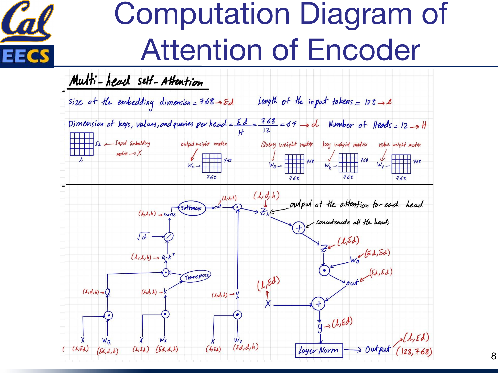
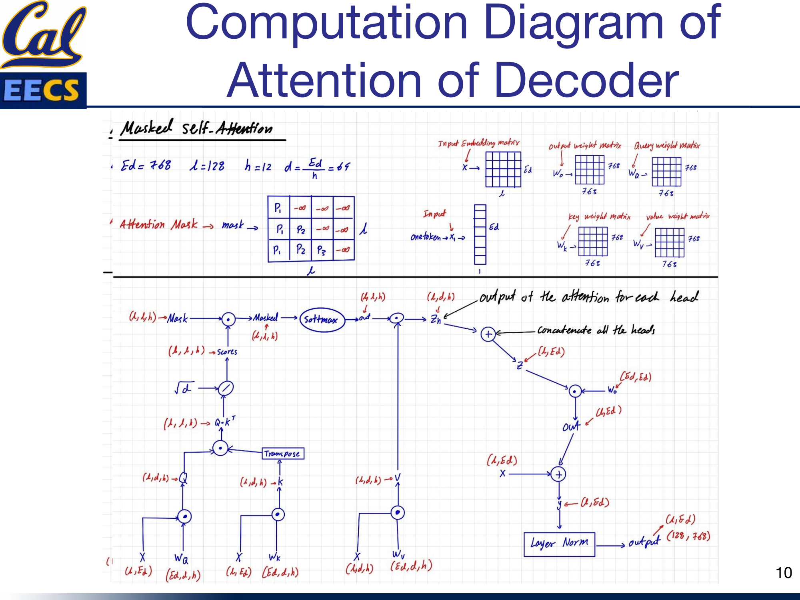
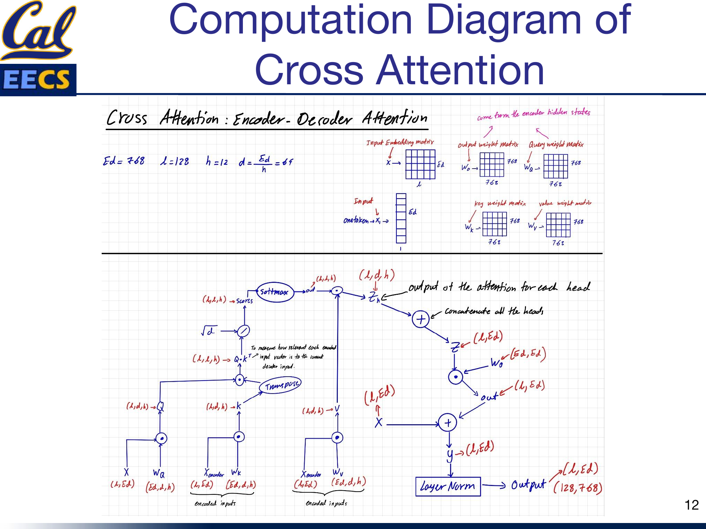
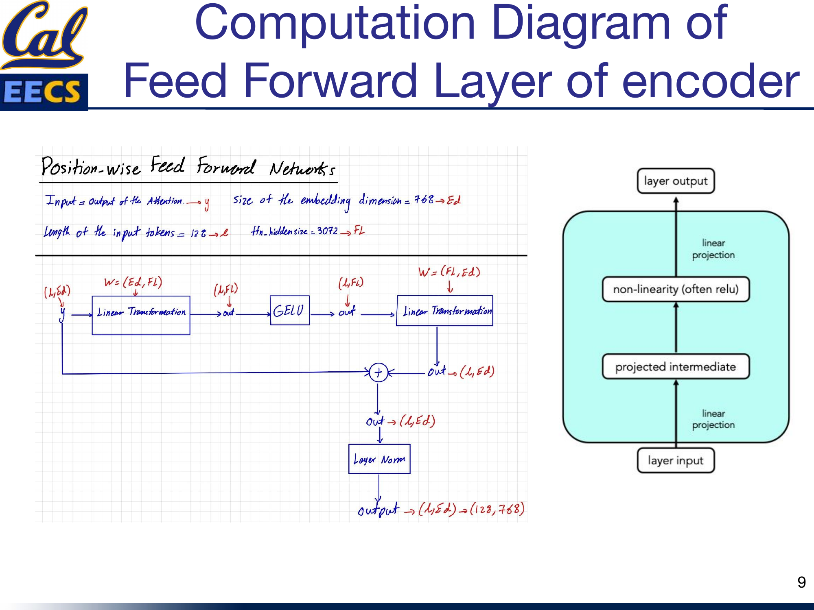
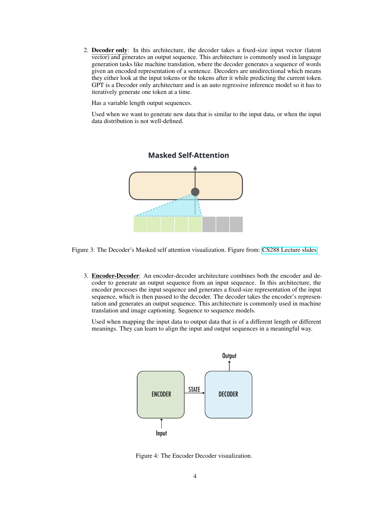

Details of the T5 Model: Exploring the Limits of Transfer Learning with a Unified Text-to-Text Transformer
By Hiva Mohammadzadeh | Stanford MSCS · UC Berkeley EECS
T5's Big Idea: Everything is Text-to-Text
The core insight behind T5 is simple and powerful: every NLP task can be cast as taking some text as input and producing some text as output. Translation? Input English, output German. Sentiment analysis? Input a sentence, output "positive" or "negative." Grammaticality checking? Input a sentence, output "acceptable" or "not acceptable."

T5 text-to-text framework showing various task examples -- translation, CoLA, summarization, etc.
This unification is what makes T5 so flexible. Instead of designing separate output heads for each task -- a classification head here, a regression head there -- T5 uses a single architecture and a single training objective across everything. The task itself is specified as a text prefix prepended to the input. Feed in "translate English to German: That is good." and the model outputs "Das ist gut." Feed in "cola sentence: The course is jumping well." and it outputs "not acceptable." Same model, same weights, same decoder -- just different prefixes.
T5 is a pre-trained deep learning model built on a text-to-text transformer. It is an encoder-decoder architecture, meaning it reads the entire input sequence at once (allowing the model to learn context from all surrounding words) and then generates output autoregressively. The base configuration consists of 12 transformer encoder-decoder blocks, with 128 input tokens, an embedding dimension of 768, 12 attention heads, and a feed-forward filter size of 3072.
T5's encoder-decoder architecture. The red cross-attention bridge is the key innovation: the decoder's queries attend to the encoder's keys and values, connecting understanding with generation.
Training: Span Corruption and Prefix Conditioning
T5's training happens in two phases, and both are worth understanding.
Pre-Training on C4
T5 is pre-trained on C4 (Colossal Clean Crawled Corpus) using a span corruption objective. Contiguous spans of tokens are selected and replaced with unique sentinel tokens. The model is trained to predict those sentinel tokens and the missing text they represent. This is essentially a fill-in-the-blanks task: given a sentence with holes punched in it, reconstruct what was removed.
This is different from BERT's masked language modeling in an important way. BERT masks individual tokens and predicts them independently. T5 masks contiguous spans -- multiple adjacent tokens at once -- and generates the missing content sequentially, which trains the decoder to produce coherent multi-token outputs from the start.
Fine-Tuning with Prefix Conditioning
Once pre-trained, T5 is fine-tuned on specific downstream tasks by converting every task into text-to-text format. Each task is specified using a text prefix that is prepended to the input before feeding it into the model. During fine-tuning, the model learns to generate output text that corresponds to the specified task, conditioned on both the input text and the task prefix. The prefix acts as a soft routing mechanism -- it tells the model what kind of transformation to apply without any architectural changes.
The Encoder-Decoder Architecture
T5 has two key ingredients: an input encoder and a task-specific decoder. This is what distinguishes it from BERT (encoder-only) and GPT-2 (decoder-only). The encoder reads the full input bidirectionally. The decoder generates the output one token at a time, left to right. And cross-attention connects them.
Full T5 architecture -- stacked Encoder blocks (Self-Attention, Add & Norm, Feed Forward, Add & Norm) and Decoder blocks (Masked Self-Attention, Add & Norm, Encoder-Decoder Attention, Add & Norm, Feed Forward, Add & Norm) with Positional Encoding, Linear, and Softmax layers
Each of the 12 encoder blocks has two sub-layers: a multi-head self-attention mechanism and a position-wise fully connected feed-forward network. Each decoder block has three sub-layers: masked self-attention, encoder-decoder cross-attention, and a feed-forward network. Every sub-layer has a residual connection followed by layer normalization.

Encoder-Decoder block structure showing Encoder Blocks feeding Encoded Sequence to Decoder Blocks with Cross-Attention, Self-Attention, and Feed-Forward Network
I think of the encoder as the "understanding" half and the decoder as the "generating" half. The encoder builds a rich bidirectional representation of the input. The decoder uses that representation -- via cross-attention -- to produce the output. Neither half works alone in T5. This is the fundamental architectural difference from models like BERT (which only encodes) and GPT-2 (which only decodes).
Encoder Self-Attention
The encoder uses standard multi-head self-attention with the following parameters: embedding dimension Ed = 768, sequence length L = 128, number of heads h = 12, and per-head dimension d = 768/12 = 64.
The input embedding matrix X has shape (L, Ed) = (128, 768). It is projected into queries, keys, and values using weight matrices Wq, Wk, and Wv, each of shape (768, 768). The resulting Q, K, and V matrices have shape (128, 768), which are reshaped to (128, 64, 12) for parallel multi-head computation.

Computation flow of encoder self-attention -- X(L,Ed) projected to Q,K,V, then Q*K^T, scaled by sqrt(d), Softmax, multiplied by V, concatenated heads, projected through Wo, residual connection, layer norm, producing output(128,768)
The attention computation follows the standard formula: Softmax(QK^T / sqrt(d)) * V. Each head computes its own attention scores independently, then the outputs from all 12 heads are concatenated and projected through an output weight matrix Wo of shape (768, 768). A residual connection adds the original input X back to the attention output, followed by layer normalization, producing the final output of shape (128, 768).
The key point here is that encoder self-attention is fully bidirectional. Every token attends to every other token in the input. There is no masking. This is exactly like BERT's attention mechanism, and it is what gives the encoder its ability to build contextually rich representations of the entire input.
Decoder Masked Self-Attention
The decoder's self-attention looks structurally identical to the encoder's, but with one critical difference: it uses an attention mask.

Computation flow of decoder masked self-attention with attention mask applied before Softmax
The mask ensures that when generating the t-th output token, the decoder can only attend to tokens at positions 1 through t. Future tokens are masked out (set to negative infinity before the softmax, which drives their attention weights to zero). This is autoregressive generation -- exactly the same mechanism used in GPT-2.
During training, the query at each position is the current token embedding, and the keys and values come from all tokens up to and including that position. During inference, when generating one token at a time, the query has shape (1, 768) representing the single current token, while the keys and values grow with each step as the generated sequence gets longer.
The weight matrices are the same shape as in the encoder: Wq, Wk, Wv all (768, 768). The feed-forward output for a single generated token has shape (1, 768).
Cross-Attention: Where Encoder Meets Decoder
Q comes from the decoder, K and V come from the encoder. This is how the decoder "reads" the encoded input.
This is the piece that makes T5 fundamentally different from both BERT and GPT-2. Cross-attention (also called encoder-decoder attention) is the mechanism that allows the decoder to look at the encoder's output while generating each token.

Cross-attention computation -- Query from decoder input X(L,Ed) with Wq, Key and Value from encoder hidden states X_encoder(L,Ed) with Wk and Wv, showing the full attention computation flow
Here is how it works. The query comes from the decoder: the current decoder hidden state is projected through Wq. But the key and value come from the encoder: the encoder's output hidden states are projected through Wk and Wv. So when the decoder computes attention scores (Q * K^T), it is measuring how relevant each encoded input token is to the current decoder state. The softmax over these scores produces a weighted combination of the encoder's value vectors, which is then used by the decoder to generate the next output token.
The dimensions are consistent with the rest of the model: Ed = 768, L = 128, h = 12, d = 64. The weight matrices Wq, Wk, Wv are each (768, 768). The attention output passes through Wo (768, 768), gets a residual connection, and then layer normalization, producing the final output of shape (128, 768).
Cross-attention is why T5 can handle tasks where the output is a complex function of the input. In translation, the decoder needs to know what the source sentence said. In summarization, it needs to selectively attend to the most important parts of the input. In question answering, it needs to focus on the passage regions relevant to the question. Without cross-attention, the decoder would be generating output blind to the input -- it would be just another language model.
The Feed-Forward Networks
Every block in both the encoder and decoder includes a position-wise feed-forward network (FFN). The structure is the same everywhere: two dense layers with a GELU activation in between.

FFN computation -- y(L,Ed) through Linear(Ed,Fl), GELU, Linear(Fl,Ed), residual connection, layer norm, producing output(128,768)
The first linear layer expands from embedding dimension to filter size: (768, 3072). The GELU activation introduces nonlinearity. The second linear layer projects back down: (3072, 768). A residual connection adds the FFN input back to the output, followed by layer normalization.
This is the same FFN design used in GPT-2 and BERT. It is applied independently to each position in the sequence, which is why it is called "position-wise." The expansion to 3072 (4x the embedding dimension) gives the network extra capacity to learn complex transformations at each position before compressing back to the original dimension.
In the encoder, the FFN output has shape (128, 768). In the decoder, when generating one token at a time during inference, the output is (1, 768).
Weight Matrix Dimensions at a Glance
Here is a consolidated reference for the key weight matrix dimensions in T5-base:
| Component | Matrix | Dimensions |
|---|---|---|
| Input embedding | Embedding | (batch_size, 128, 768) |
| Per-head view | Reshaped | (batch_size, 128, 64, 12) |
| Encoder self-attn | Wq, Wk, Wv | (768, 768) each |
| Encoder self-attn | Q, K, V | (batch_size, 128, 768) |
| Decoder masked self-attn | Wq, Wk, Wv | (768, 768) each |
| Decoder self-attn (inference) | Q | (batch_size, 1, 768) |
| Decoder self-attn (inference) | K, V | (batch_size, seq_len, 768) |
| Cross-attention | Wq (from decoder), Wk/Wv (from encoder) | (768, 768) each |
| Feed-forward (all blocks) | Dense 1 | (768, 3072) |
| Feed-forward (all blocks) | Dense 2 | (3072, 768) |
| Output projection | Wo | (768, 768) |
All attention weight matrices share the same (768, 768) shape. The difference between encoder attention, decoder masked attention, and cross-attention is not in the weight shapes -- it is in where the inputs come from and whether masking is applied.
Context: Where T5 Fits in the Evolution
T5 represents the encoder-decoder approach at its best, but it is important to understand where it sits relative to the other two architecture families I have surveyed.

The encoder-decoder paradigm: the encoder processes the full input and passes a state representation to the decoder, which generates output autoregressively. From my CS199 independent study.
In my independent study, I compared the three architecture types head-to-head:
-
Encoder-only (BERT): Produces fixed-size representations. Bidirectional. Best for understanding tasks -- classification, NER, question answering where the full input must be comprehended before producing output.
-
Decoder-only (GPT-2/3/4): Generates variable-length output autoregressively. Unidirectional. Best for generation tasks or when the input data distribution is open-ended.
-
Encoder-Decoder (T5): Combines both. The encoder reads the full input bidirectionally, the decoder generates output autoregressively with access to the encoder's representations via cross-attention. Best for sequence-to-sequence tasks -- translation, summarization, and any task where input and output have different lengths or meanings.
T5's key insight was that you do not need separate architectures for different tasks. By framing everything as text-to-text with prefix conditioning, a single encoder-decoder model handles classification, regression, translation, and summarization identically.
PaLM: Scaling the Decoder Path
While T5 proved the power of encoder-decoder models, Google's PaLM (Pathways Language Model) took a different approach: a 540-billion parameter, dense decoder-only Transformer. PaLM uses parallel layers to speed up training and multi-query attention to speed up inference. It achieved state-of-the-art few-shot performance on hundreds of benchmarks, demonstrating that at sufficient scale, decoder-only models can match or exceed encoder-decoder performance even on understanding tasks.
This does not diminish T5's contribution -- it shows that the encoder-decoder architecture provides strong performance at smaller scales, which matters for practical deployment.
This section draws from my CS199 Supervised Independent Study at UC Berkeley.
Key Takeaways
T5 is a synthesis. It takes the best ideas from encoder-only models (BERT) and decoder-only models (GPT-2) and combines them into a single encoder-decoder architecture.
- From BERT, it gets bidirectional encoding. The encoder reads the full input with no masking, building rich contextual representations where every token can attend to every other token.
- From GPT-2, it gets autoregressive decoding. The decoder generates output left to right, using masked self-attention to ensure causal generation.
- Cross-attention is the glue. It is the mechanism that neither BERT nor GPT-2 has on its own. Cross-attention lets the decoder condition its generation on the full encoded input, which is essential for tasks where the output depends heavily on understanding the input.
The text-to-text framing is what makes T5 practical. By converting every task to the same input/output format and using prefix conditioning, a single model and a single training pipeline can handle translation, classification, summarization, and question answering. No task-specific heads, no architectural modifications -- just different prefixes.
When I work with T5, I find that understanding the three types of attention is the key to understanding the whole model. Encoder self-attention gives you context. Decoder masked self-attention gives you generation. Cross-attention gives you the connection between the two. Everything else -- the FFNs, the residual connections, the layer norms -- is shared infrastructure. Get the attention right, and you get T5.